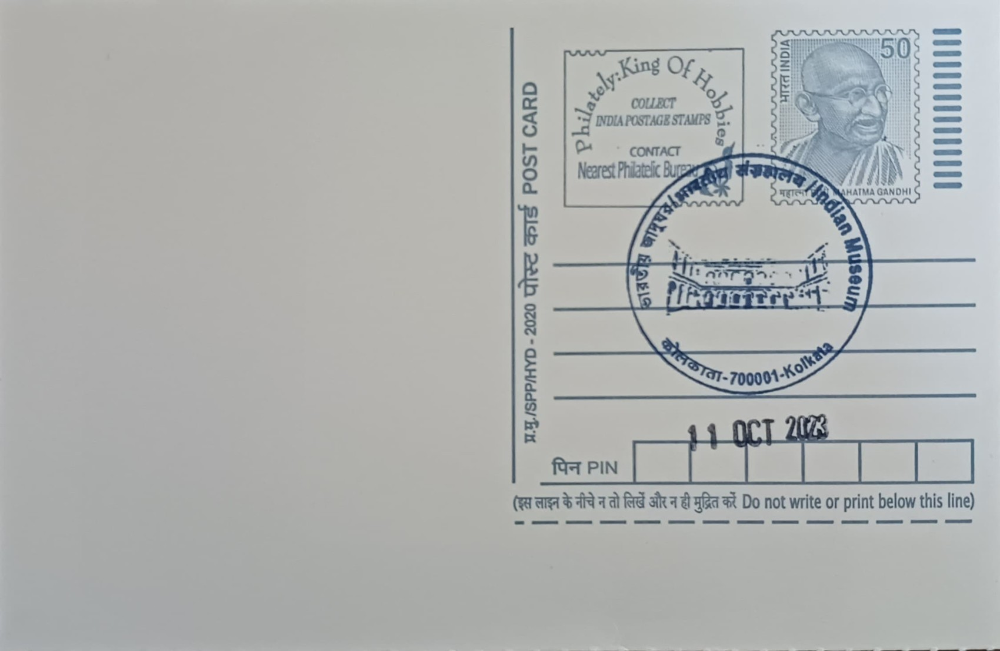

Indian Museum
ভারতীয় জাদুঘর


The Indian Museum traces its origins to the Asiatic Society of Bengal, founded in Calcutta in 1784 by the orientalist Sir William Jones to further scholarly inquiry into the languages, history, and natural productions of Asia. By 1796 the Society's members had begun discussing a dedicated repository for the specimens, antiquities, and manuscripts accumulating from their researches, and in 1808 the colonial government sanctioned a grant to erect a building for this purpose on Park Street. The museum proper was inaugurated in 1814 under the Society's aegis, with the Danish botanist Dr Nathaniel Wallich serving as its founder curator, making it the ninth oldest museum in the world by most accounts.
As the oldest museum in India and, by the size of its holdings, the largest in the country, the Indian Museum occupies a foundational place in the history of museology across Asia. It functions today as a multidisciplinary institution under the Ministry of Culture, organised into six principal sections, namely Art, Archaeology, Anthropology, Geology, Zoology, and Economic Botany, spread across roughly thirty-five galleries. This breadth of subject matter, uncommon among museums of comparable age, reflects its origins as a general cabinet of curiosities assembled by a learned society rather than a museum built around a single theme, and it has long served as a training ground and reference institution for archaeologists, naturalists, and anthropologists working across the subcontinent.
The museum remained housed at the Asiatic Society's Park Street premises from 1814 until 1878. Construction of a dedicated building began in 1867 on a plot on Chowringhee Road, opposite the Maidan, with the Italianate structure designed by the architect Walter L. Granville, who was also responsible for several other public buildings of colonial Calcutta. The building, arranged around a central courtyard with colonnaded verandahs, was substantially complete by 1875, and the collections were transferred from Park Street and formally opened to the public on 1 April 1878, initially with just two galleries, before expanding over subsequent decades into the extensive complex that stands today.
Among the museum's most studied holdings are the second-century BCE sandstone railings and gateway sculptures recovered from the Buddhist stupa at Bharhut in Madhya Pradesh, reconstructed within the museum and regarded as one of the most important early narrative sculpture collections in South Asia, alongside important pieces from Amaravati and Gandhara. The Egyptology gallery, anchored by an Egyptian mummy acquired in the nineteenth century, has long been one of the most visited single exhibits in the building, drawing particular attention from school groups and first-time visitors. The natural history galleries, meanwhile, preserve specimens assembled during colonial-era zoological and geological surveys, including skeletal mounts and taxidermy that were themselves considered scientific landmarks at the time of their display.
The museum continues to function as a department of the Ministry of Culture, Government of India, and in recent years has undertaken gallery renovations, improved climate control for its conservation laboratories, and digitisation of parts of its catalogue to widen access to researchers beyond Kolkata. It also maintains close institutional links with the Asiatic Society, Zoological Survey of India, and Geological Survey of India, several of which trace their own origins to collections first housed within its walls. More than two centuries after its founding, the Indian Museum remains in active daily use as a public institution on Chowringhee, drawing both researchers consulting its reserve collections and the ordinary stream of visitors who pass through its courtyard galleries each day.
| Date of Introduction | October 11, 2023 |
|---|---|
| Address | Senior Postmaster, |
| Kolkata GPO, | |
| Kolkata (dt.), West Bengal - 700001. |